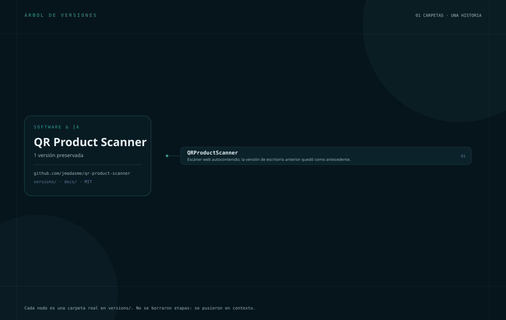

QRProductScanner
10 archivosEscáner web autocontenido; la versión de escritorio anterior quedó como antecedente.
Ver carpetaEscáner de QR de productos que corre en el navegador, sin backend ni instalación.

Aplicación web autocontenida para escanear códigos QR de productos. Antes fue una aplicación de escritorio en PyQt6 + OpenCV; la versión publicada prioriza abrir y usar.
Una herramienta de escaneo que exige instalar Python, OpenCV y Qt para leer un código es más cara que el problema que resuelve.
Mover la lectura al navegador: abrir la página, dar permiso a la cámara y escanear.
Escáner de códigos QR de productos que corre en el navegador: cámara, decodificación en canvas y consulta simulada, sin backend ni build.
Escáner de códigos QR de productos que corre en el navegador: cámara, decodificación en canvas y consulta simulada, sin backend ni build.
Los fragmentos son del código real. El catálogo y la API son simulados; no hay backend ni persistencia.
Cada carpeta conserva una etapa del proyecto. No se borraron las anteriores: se pusieron en contexto.
Escáner web autocontenido; la versión de escritorio anterior quedó como antecedente.
Ver carpetaQR Product Scanner es una aplicación web de un solo archivo que lee códigos QR de productos con la cámara del navegador. Usa jsQR para decodificar el cuadro de video y una API simulada para mostrar código, descripción y precio. No requiere backend, build ni instalación.
Está pensada para demostrar el flujo completo de consulta en terreno: abrir, permitir la cámara, apuntar y ver el resultado. También sirve como base para conectar un catálogo real reemplazando una función. Su antecedente fue una aplicación de escritorio en PyQt6 y OpenCV, reemplazada para eliminar dependencias y facilitar el uso desde el móvil.
El README original de la versión de referencia, completo.
Escáner profesional de códigos QR para consulta de productos — ahora como aplicación web moderna.
🖥️ Antes: App de escritorio Python + PyQt6 + OpenCV
🌐 Ahora: Web app auto-contenida (HTML + CSS + JS) — sin servidor, sin instalación
getUserMedia)jsQR, 4 capturas por segundoAbre el archivo index.html en cualquier navegador moderno (Chrome, Edge, Safari, Firefox):
# Desde la terminal
open index.html # macOS
xdg-open index.html # Linux
start index.html # Windows
O simplemente haz doble clic en index.html.
cd QRProductScanner
python3 -m http.server 8080
Luego abre http://localhost:8080 en tu navegador.
El proyecto está disponible en GitHub Pages (si está habilitado):
https://wanderc137.github.io/QRProductScanner/
En la carpeta resources/ hay 4 códigos QR pre-generados:
| Código | Producto | Valor |
|---|---|---|
PROD-00123-A7B |
Auriculares Bluetooth Pro | $59.99 |
PROD-00456-C9D |
Teclado Mecánico RGB | $89.99 |
PROD-00789-E1F |
Monitor 27" 4K | $349.99 |
PROD-00999-G3H |
Webcam HD 1080p | $45.50 |
Ábrelos en tu celular o en otra pantalla para probar.
QRProductScanner/
├── index.html ← Web app (todo en uno)
├── README.md ← Este archivo
├── PLAN.md ← Plan de desarrollo
├── AUDIT_REPORT.md ← Reporte de auditoría
├── resources/
│ ├── qr_PROD-00123-A7B.png
│ ├── qr_PROD-00456-C9D.png
│ ├── qr_PROD-00789-E1F.png
│ └── qr_PROD-00999-G3H.png
└── docs/
├── datasheet.md ← Documentación de usuario
└── developer.md ← Documentación técnica
| Tecnología | Propósito |
|---|---|
| HTML5 | Estructura semántica |
| CSS3 | Diseño con variables, flexbox, animaciones |
| JavaScript (ES6+) | Lógica de la aplicación |
| jsQR | Decodificación de QR en el cliente |
| Inter | Tipografía limpia y moderna |
| MediaDevices API | Acceso a cámara desde el navegador |
El código está preparado para conectarse a una API real. Solo necesitas reemplazar la función getProduct() en index.html con una llamada fetch() a tu endpoint:
async function getProduct(code, onResult) {
try {
const res = await fetch(`/api/products/${code}`);
const data = await res.json();
onResult(data);
} catch (err) {
onResult(null);
}
}
MIT © 2026
Las primeras versiones existen para que estos errores no se repitan: cada una dejó una decisión de diseño verificable.
La versión anterior en PyQt6 y OpenCV obligaba a instalar Python, Qt y OpenCV para leer un código, una carga mayor que el problema a resolver. Se reescribió como una página única que usa la cámara del navegador. El README conserva la versión de escritorio como antecedente, pero no incluye su código.
La aplicación publicada usa un objeto PRODUCTS con cuatro productos de ejemplo y una latencia aleatoria de 300 a 800 ms. No consulta un inventario ni persiste lecturas. El README lo declara como demo y deja preparada la función getProduct() para sustituirla por una API real.
jsQR se carga desde jsDelivr con la etiqueta @latest, así que el escaneo depende de la red en la primera carga y de una versión que puede cambiar. La cámara exige HTTPS o localhost, y abrir el archivo con file:// puede bloquear el permiso.
Seis criterios con la misma escala en todo el catálogo, para comparar sin marketing.
No para escanear; solo para cargar la página si está publicada.
Sí, con un navegador moderno y permiso de cámara.
No hay backend ni almacenamiento.
Para eliminar la instalación y facilitar el uso en terreno.
Está orientado a QR; otros formatos dependen de la API del navegador.
Usá esta familia como base para qr product scanner. Está documentada para que puedas entenderla, ejecutarla y continuarla sin adivinar.